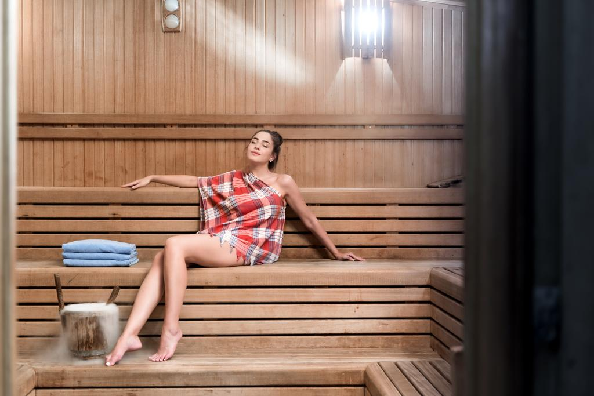
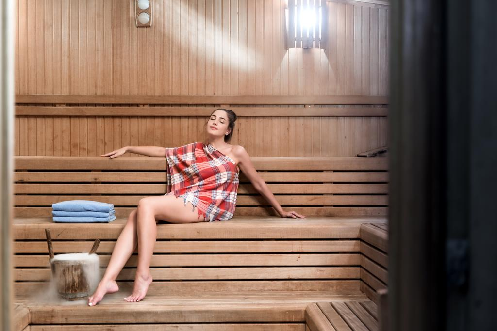
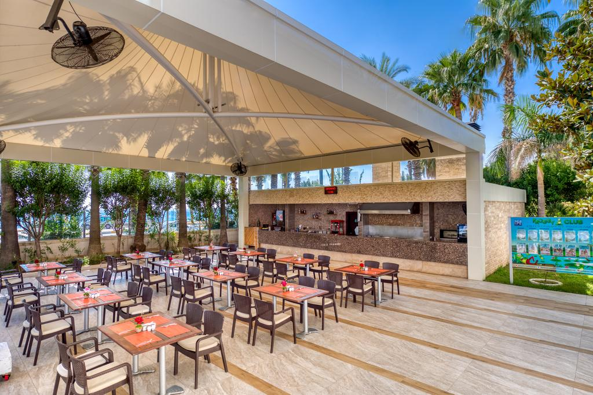

Porto Bello Hotel Resort & Spa'da birinci sınıf hizmetle tatilinizin tadını çıkarın. Antalya şehrindeki popüler seçimlerimizden biri.
Bu lüks 5 yıldızlı tesis, Konyaaltı Plajı'nda ve Antalya'nın hareketli merkezinin yakınında yer almaktadır. Otelde açık yüzme havuzu, tenis kortları ve modern bir spa bulunmaktadır.


Porto Bello Resort & Spa'nın konuk odalarında balkon, düz ekran uydu TV ve oturma alanı bulunmaktadır. Tüm odalarda minibar vardır.
Porto Bello'nun konukları, otelin restoranlarında çeşitli uluslararası yemeklerin tadını çıkarabilir. Yemekler içeride veya dışarıda servis edilir ve bir kadeh yerel şarapla tadını çıkarabilirsiniz.
Porto Bello'daki dinlenme seçenekleri arasında sauna, spa küveti ve masaj hizmetleri sayılabilir. Açık yüzme havuzu palmiye ağaçlarıyla çevrilidir ve en gelişmiş kardiyovasküler ekipmanlara sahip modern bir spor salonu da vardır.
Porto Spa, Beydağları Dağları'nın eteğinde, Antalya Uluslararası Havaalanı'na 21 km uzaklıktadır.
Özellikle uyumlu çiftler arasında popüler: İki kişilik bir gezi için 8.7 puan verildi.
Dilinizi konuşuyoruz!
En Popüler Alanlar
Yüzme havuzu
Havalimanı shuttle'ı
Plaj
Aile odaları
Spa ve iyilik merkezi
Dış havuz
Bar
Havuz barı